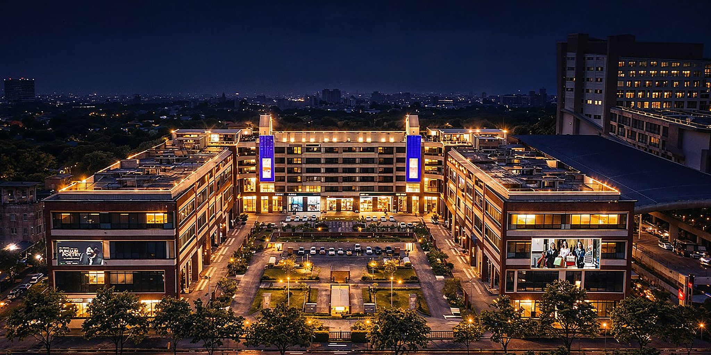
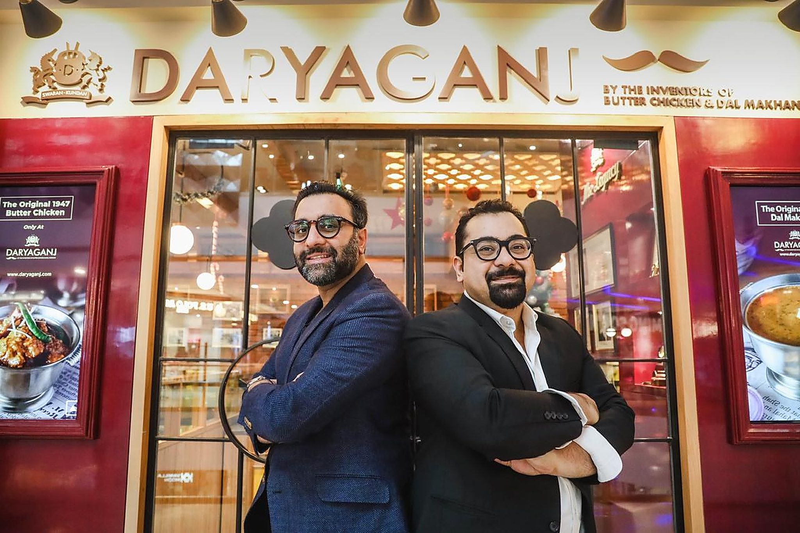
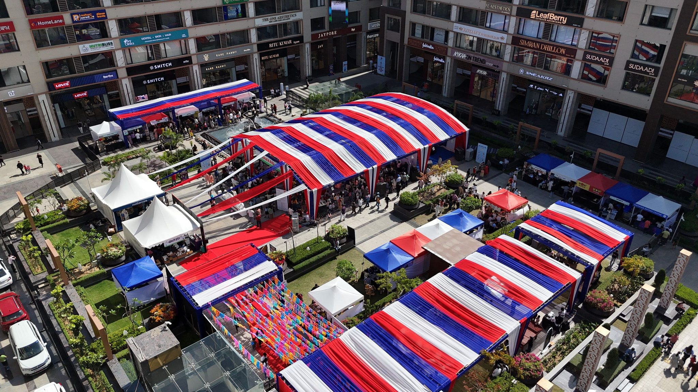
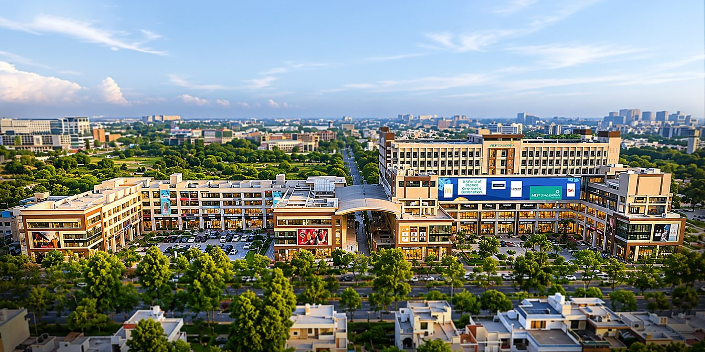

Sector 62 · Mohali · Pride of Mohali
Where Tricity lives, loves & celebrates.
Premium shopping, gourmet dining, world-class entertainment and unforgettable moments, under one elegant roof on Himalaya Marg.

The courts at night · Sector 62, MohaliHLP Gallerria
It isn't just a mall. It's Tricity's heartbeat: a curated destination where premium brands, gourmet experiences and unforgettable memories come together.
Discover premium stores across high-street fashion, designer ethnic and bridal wear, jewellery, accessories, beauty, footwear, gadgets and more. Savour the finest dining, from trending cafés and rooftop lounges to fine restaurants and Mohali's most vibrant food court.
Enjoy blockbuster movies in the upcoming luxurious 5-screen Gold Class multiplex, endless fun in the kids' play zone and entertainment area, and the energy of Tricity's favourite hangout. Open every day, 11 AM to 10 PM, with restaurants until midnight.
What's on · October 2026
This month at Gallerria.
The directory
66 brands open. 13 more coming.

Dine
The inventors of butter chicken are now in Tricity.
Daryaganj, founded by Raghav Jaggi and Amit Bagga in tribute to Kundan Lal Jaggi, made its regional debut at HLP Gallerria with the original 1947 recipes and the world's first five-sense dining experience. Alongside it: PF Chang's, Chili's, Social, Starbucks, Blue Tokai and 19 more.
Explore brandsFacilities
Designed with intention. Built for joy.
Food & beverage
20+ F&B brands, cafés, rooftop lounges and the food court
Cinema
An upcoming 5-screen Gold Class multiplex by PVR INOX
Retail
70+ brands, 10+ anchors, from Westside to Swarovski
Entertainment
Kids' play zones, gaming and the region's favourite hangout
Grade-A offices
Workspaces above the retail, including Awfis co-working
Facility management
Professionally run, end to end
Valet parking
Drop at the door, every day
Concierge services
Help with stores, events and visits
Green building
Designed for sustainable operations
1,300 car parking
Among the largest parking capacities in Mohali
3-tier security
Layered security across every court
State-of-the-art LEDs
The largest LED screen in the region
Moments that matter
Tricity's biggest nights happen here.



Press & news
Making headlines.

Leasing
Bring your brand to the spine that connects Chandigarh and Mohali.
Double-height showrooms, SCOs and kiosks across eight levels, 1,300 car parks and visitors from across Punjab. Explore the floor plans, then talk to the leasing team.
Plan your visit
Himalaya Marg, Sector 62.
Himalaya Marg, Sector 62, Sahibzada Ajit Singh Nagar (Mohali), Punjab 160062
Directions →Timings
All days · 11 AM to 10 PM
Restaurants · 11 AM to midnight
Arrive
1,300 car parks
Valet and concierge